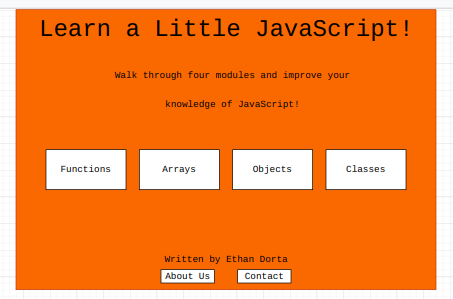
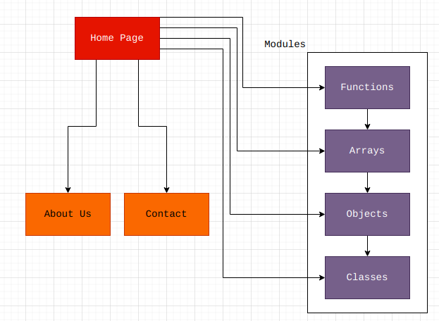

Learn a Little JavaScript!
Project Overview
My website is a small application that provides overviews and tips of basic JavaScript features along with short quizzes at the end of each section to reinforce learning. The website is intended for users new to JavaScript to help familiarize themselves with various concepts and build confidence in their abilities. The website will have descriptions of common tools provided by JavaScript, such as function and array constructs, as well as useful API documentation of common methods to help people get started quicker.
Client Information
- Name, Email, and Phone Number: [private]
- Organization associated: Unnamed Shoegaze Band
Wireframe

Site Map

Page Designs
-
Home Page
This is the home page that provides an overview of the website along with links to all other pages to engage with the website. All users who view the website will see this first to get them started. The website will contain a heading along with a short description of the website, followed by links to the various module pages and footer information if necessary for the user. The page will not contain data entries, but there will be hyperlinks to other pages to navigate the website.
-
About Us
This is the about us page that contains a few short paragraphs elaborating about the purpose of the website and giving some information about the developer. This website is only for people interested in the website and its creation and is not necessary to view in order to properly use the website. There will be no data entry on this page, and the only hyperlink will be redirecting to the home page.
-
Contact
This website allows users to contact the website creator and provide feedback about the website. The audience is any user who would like to know more about the website or anyone who has a suggestion. The webpage will be a form that asks for a user's name, email, and whatever comment they would like to send. The email would need to be validated to ensure it is correct. If possible, the information given can be sent via an AJAX request to a running bot that forwards the information to me through some form of instant message.
-
Functions
This is the first module provided to users. It contains an introductory paragraph about the concept of JavaScript functions, and provides some helpful references to different built-in functions that can assist users. The audience of the page is prospective JavaScript developers who are interested in learning more about functions. There will be no form data entry, but instead a dynamic quiz consisting of buttons at the end of the page that indicates whether or not a user selected the correct response to a given question, with a score given at the end. The page contains two hyperlinks that go back to the home page along with the next module, arrays.
-
Arrays
This is the second module for users that introduces arrays and provides tips and useful methods for working with them. The webpage consists of multiple paragraphs and code snippets. The audience is developers who would like to learn more about using arrays and lists in JavaScript. As above, there are no specific form inputs but instead a dynamic quiz that allows users to reinforce their understanding. The page contains two hyperlinks that go back to the home page along with the next module, objects.
-
Objects
This is the third module in the small course that goes over the concept of objects in JavaScript. The page will contain information regarding object properties such as accessing objects, as well as methods provided by the main Object object that provides ways to manipulate objects. The page will not contain data entry not data validation, but the normal JavaScript quiz along with a hyperlink to the next module and a hyperlink back to the home page.
-
Classes
This is the fourth and final module in the short JavaScript review. This page contains information introducing ES6 classes, such as constructors, the concept of super, and the concept of this in the context of classes. The page will contain the same quiz the other three pages have contained as well as a link back to the home page as there are no further modules.
Dynamic Functionality
The dynamic functionality of the website will be determined by the quizzes provided at the end of each module. Each module contains a short multiple choice quiz that evaluates the user's understanding of the given content. The quiz will be in HTML but submitting will run JavaScript and inform the user of their score rather than submitting the form to a web server. This will modify the webpage to show a score as well as the questions that were incorrect by modifying the CSS of given items and appending HTML.